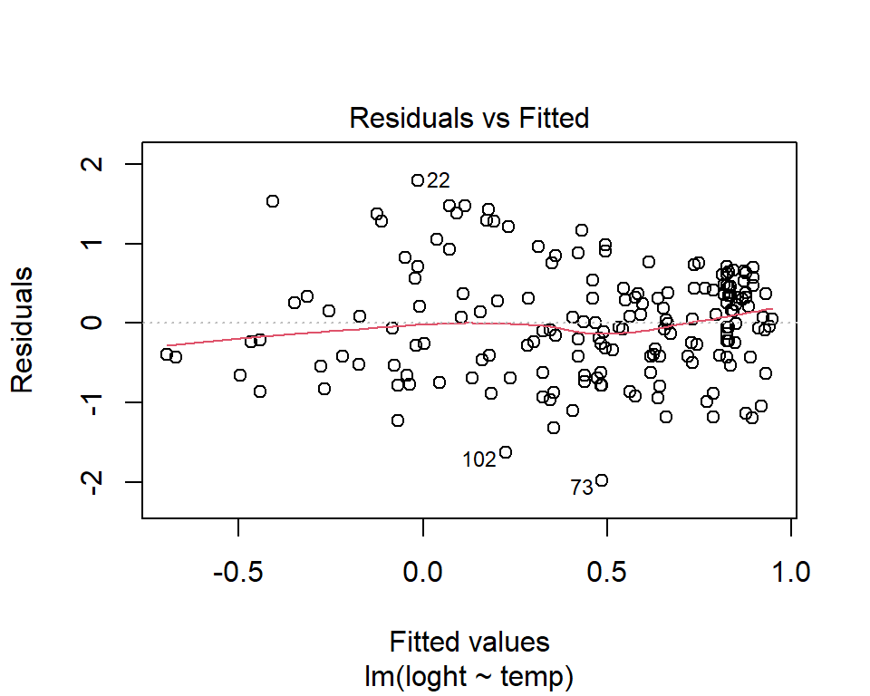
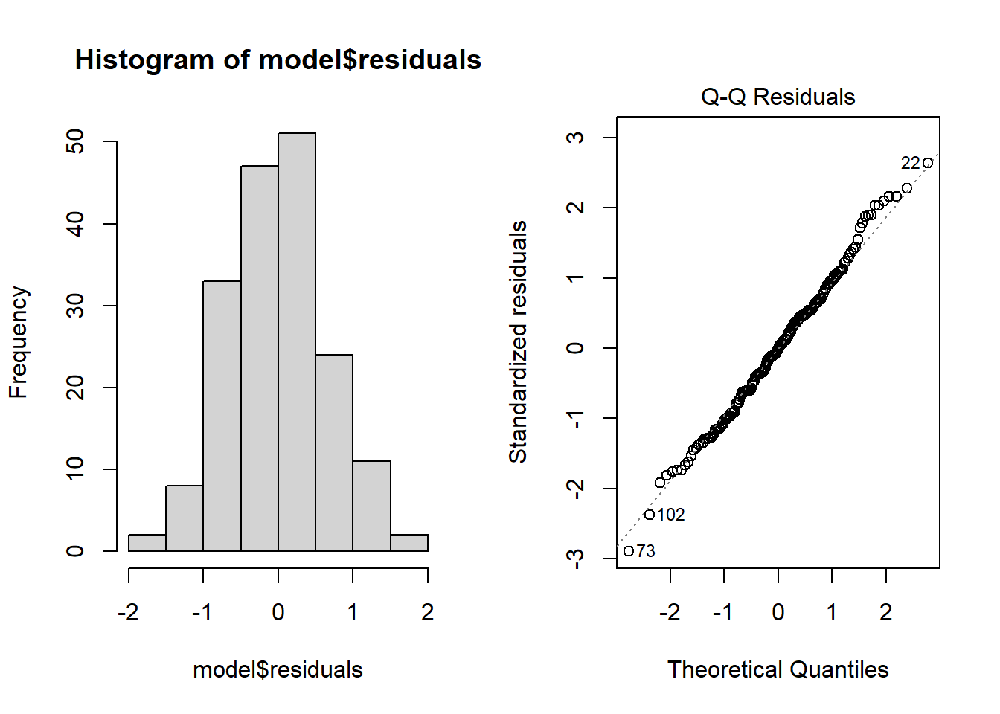
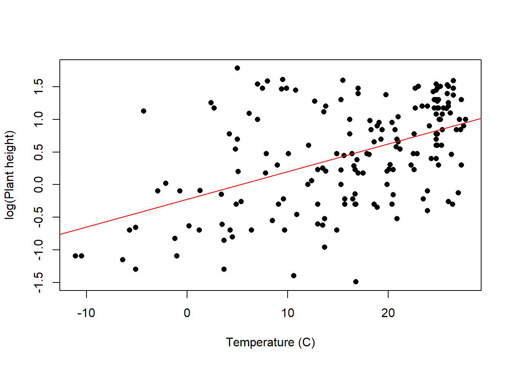

Plant_height <- read.csv(file = "Plant_height.csv", header = TRUE)Regresión Lineal
La regresión lineal es una de las técnicas estadísticas más ampliamente utilizadas en las ciencias de la vida y la tierra. Se utiliza para modelar la relación entre una variable de respuesta (también llamada variable dependiente) \(y\) y una o más variables explicativas (también llamadas variables independientes o predictoras) \(x_{1}\),\(x_{2}\)…\(x_{n}\). Por ejemplo, podríamos usar la regresión lineal para probar si la temperatura (la variable explicativa) es un buen predictor de la altura de las plantas (la variable de respuesta).

En la regresión lineal simple, con una única variable explicativa, el modelo toma la siguiente forma:
\[y = \alpha + \beta x + \varepsilon \]
donde \(\alpha\) es la intersección (valor de \(y\) cuando \(x\) = 0), \(\beta\) es la pendiente (cantidad de cambio en \(y\) por cada unidad de \(x\)) y \(\varepsilon\) es el término de error. La inclusión del término de error, también llamado parte estocástica del modelo, es lo que hace que el modelo sea estadístico en lugar de matemático. El término de error se extrae de una distribución estadística que captura la variabilidad aleatoria en la respuesta. En la regresión lineal estándar se asume que esto sigue una distribución normal (Gaussiana).
Es importante tener en cuenta que lo lineal en el modelo lineal no implica una relación lineal recta, sino más bien que la respuesta es una combinación lineal (aditiva) de los efectos de las variables explicativas. Sin embargo, debido a que tendemos a comenzar ajustando la relación más simple, muchos modelos lineales se representan mediante líneas rectas.
También es importante destacar que la regresión lineal es solo un caso especial de un modelo lineal, donde tanto las variables de respuesta como las predictoras son continuas.
Ejecutando el análisis
El objetivo en la regresión lineal es obtener las mejores estimaciones para los coeficientes del modelo (\(\alpha\) y \(\beta\)). En R, puedes ajustar modelos lineales utilizando la función lm.
Para este ejemplo práctico, descarga un conjunto de datos sobre alturas de plantas alrededor del mundo, Plant_height.csv, e impórtalo en R.
El argumento principal de lm es la fórmula del modelo y ~ x, donde la variable de respuesta se encuentra a la izquierda de la tilde (~) y la variable explicativa se encuentra a la derecha. lm también tiene un argumento opcional llamado data que te permite especificar un data frame del cual se tomarán las variables.
Para probar si la altura de las plantas está asociada con la temperatura, modelaríamos la altura como la variable dependiente (en este caso estamos utilizando el logaritmo de la altura de las plantas) y la temperatura como la variable predictora.
lm(loght ~ temp, data = Plant_height)Interpretación de los resultados
Para obtener una salida detallada (por ejemplo, valores de coeficientes, R2, estadísticas de prueba, valores de p, intervalos de confianza, etc.), asigna la salida de la función lm a un nuevo objeto en R y utiliza la función summary para extraer información de ese objeto de modelo.
model <- lm(loght ~ temp, data = Plant_height)
summary(model)
Call:
lm(formula = loght ~ temp, data = Plant_height)
Residuals:
Min 1Q Median 3Q Max
-1.97903 -0.42804 -0.00918 0.43200 1.79893
Coefficients:
Estimate Std. Error t value Pr(>|t|)
(Intercept) -0.225665 0.103776 -2.175 0.031 *
temp 0.042414 0.005593 7.583 1.87e-12 ***
---
Signif. codes: 0 '***' 0.001 '**' 0.01 '*' 0.05 '.' 0.1 ' ' 1
Residual standard error: 0.6848 on 176 degrees of freedom
Multiple R-squared: 0.2463, Adjusted R-squared: 0.242
F-statistic: 57.5 on 1 and 176 DF, p-value: 1.868e-12Las estimaciones de los coeficientes te dan la pendiente e intersección. En este ejemplo, la ecuación de regresión para la altura (logarítmica) de las plantas en función de la temperatura es:
\[log(altura de la planta) = -0.22566 +0.0421.temperatura + \varepsilon \]
Llamar a summary en un objeto de modelo produce mucha información útil, pero una de las cosas principales a tener en cuenta son las estadísticas t y los valores de p para cada coeficiente. Estas pruebas la hipótesis nula de que el valor real del coeficiente es 0.
Por lo general, no nos importa si la intersección es cero o no, pero para el otro coeficiente (la pendiente), un valor significativamente diferente de cero indica que hay una asociación entre esa variable explicativa y la respuesta. En este ejemplo, un aumento en la temperatura se asocia con un aumento en la altura de las plantas.
Si bien las estadísticas t y los valores de p indican una asociación significativa, la fuerza de la asociación se captura mediante el valor de R2, que es la proporción de varianza en la respuesta que se explica por la(s) variable(s) explicativa(s).
La estadística F y su valor de p asociado indican si el modelo en su conjunto es significativo. El modelo siempre será significativo si alguno de los coeficientes es significativo. Con solo una variable predictora, la probabilidad asociada a la prueba t, que prueba si la pendiente difiere de cero, es idéntica a la probabilidad asociada a la estadística F.
También podemos obtener intervalos de confianza del 95% para los dos parámetros. Mostrar que los intervalos para la pendiente no incluyen cero es otra forma de mostrar que hay una asociación entre la variable dependiente y la variable predictora.
confint(model) 2.5 % 97.5 %
(Intercept) -0.43047074 -0.02085828
temp 0.03137508 0.05345215Supuestos a verificar
Linealidad. ¡No tiene sentido tratar de ajustar una línea recta a datos que están curvados! Las relaciones curvilíneas producen patrones en forma de U en los gráficos de los residuos versus los valores ajustados. El uso de la función plot en un objeto de modelo proporciona una serie de diagnósticos gráficos del modelo, el primero de los cuales es un gráfico de residuos versus valores ajustados.
plot(model, which = 1)
La ausencia de patrones fuertes en el gráfico anterior indica que el supuesto de linealidad es válido. Si hay patrones fuertes, una solución potencial es transformar el logaritmo del valor de respuesta. Observa que en el ejemplo anterior la altura de las plantas ya se había transformado logarítmicamente. Otra solución alternativa es ajustar un modelo lineal del valor de respuesta como una función polinómica (por ejemplo, cuadrática) del valor de respuesta. La forma más sencilla de hacer esto en R es utilizando la función poly.
Haz clic aquí para ver una aplicación interactiva que muestra qué patrones de residuos se esperarían con relaciones curvadas.
Varianza constante. Una distribución uniforme de los datos alrededor de la línea de regresión es deseable. Si el gráfico de residuos versus valores ajustados tiene forma de abanico, se viola el supuesto de varianza constante (también conocido como homogeneidad de varianza). La transformación logarítmica de la variable de respuesta puede solucionar este problema, pero si no lo hace, la mejor solución es utilizar una distribución de errores diferente en un marco de modelo lineal generalizado (GLM). Consulta Modelos lineales generalizados 1 para obtener más información.
Normalidad. Las comprobaciones de si los datos siguen una distribución normal generalmente se realizan mediante la representación de un histograma de los residuos o mediante un gráfico de cuantiles donde los residuos se representan frente a los valores esperados de una distribución normal (el segundo de los gráficos obtenidos mediante plot(model)). Si los puntos en el gráfico de cuantiles se encuentran principalmente en la línea, los residuos siguen una distribución normal. Las violaciones de la normalidad se pueden solucionar mediante transformaciones o mediante el uso de una distribución de errores diferente en un GLM. Sin embargo, cabe destacar que la regresión lineal es razonablemente robusta frente a las violaciones de la normalidad.
par(mfrow = c(1, 2)) # This code put two plots in the same window
hist(model$residuals) # Histogram of residuals
plot(model, which = 2) # Quantile plot
Independencia. Las observaciones de la variable respuesta deben ser independientes entre sí. Las observaciones no independientes son aquellas que están de alguna manera asociadas entre sí más allá de lo que se explica por la(s) variable(s) predictoras. Por ejemplo, las muestras recogidas en el mismo sitio, o repetidamente del mismo objeto, pueden ser más similares debido a algún factor adicional que no sea la variable explicativa medida. Garantizar la independencia es un problema de diseño experimental y de muestreo, y generalmente sabemos si los datos son independientes o no antes de nuestro análisis.
Existen varias medidas para tratar la falta de independencia. Estas incluyen asegurarse de que todas las variables predictoras importantes estén en el modelo; promediar las observaciones anidadas; o utilizar un modelo mixto (ver Modelos mixtos 1).
Comunicación de los resultados
Escrita. Los resultados de la regresión lineal se pueden presentar en el texto de diversas formas, pero a menudo basta con una breve oración, por ejemplo: “la altura de las plantas mostró una relación significativa (F = 57.5, p < 0.01) negativa con la temperatura”. Sin embargo, si has realizado varios análisis (o si hay más de una variable predictora), puede ser útil presentar los resultados en forma de tabla con los valores de los coeficientes, los errores estándar y los valores de p para cada variable explicativa.
Visual. Para una regresión lineal con una sola variable explicativa, es útil presentar los resultados en forma de gráfico de dispersión. La línea de mejor ajuste derivada del modelo se puede agregar con la función abline.
plot(loght ~ temp, data = Plant_height, xlab = "Temperature (C)", ylab = "log(Plant height)", pch = 16)
abline(model, col = "red")
Más ayuda
Escribe ?lm para obtener la ayuda de R para esta función.
Quinn y Keough (2002) **Experimental design and data analysis for biologists.* Cambridge University Press. Capítulo 5: Correlación y regresión.
McKillup (2012) Statistics explained. An introductory guide for life scientists. Cambridge University Press. Capítulo 17: Regresión.
Más consejos sobre la interpretación de coeficientes en modelos lineales
Autor: Andrew Letten
Año: 2016
Última actualización: Nov. 2023